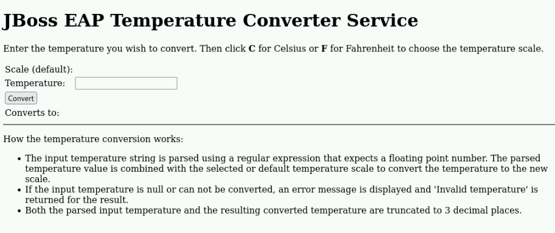

Configuring the Web Subsystem
Configuring the Root Web Application
-
Any application you deploy on Red Hat JBoss EAP 8 uses a standard HTTP address.
-
For example, an application called app.war is available, by default, at http://<server>:8080/app.
-
The /app is defined as the context path according to the Jakarta Enterprise Edition (Jakarta EE) specifications. If a HTTP request does not provide a context path , then JBoss EAP displays a default JBoss welcome application.
<subsystem xmlns="urn:jboss:domain:undertow:12.0" ...> <buffer-cache name="default"/> <server name="default-server"> ...output omitted... <host name="default-host" alias="localhost"> <location name="/" handler="welcome-content"/> <http-invoker security-realm="ApplicationRealm"/> </host> </server> ...output omitted... <handlers> <file name="welcome-content" path="${jboss.home.dir}/welcome-content"/> </handlers> </subsystem> -
Notice that the / root path uses a handler called welcome-content, and that this welcome-content handler defines the location of the JBoss welcome application.
-
The default application can be replaced in one of two ways:
-
Changing the welcome-content file handler.
-
Changing the default-web-module attribute on the default-host tag in the undertow subsystem.
-
Configure Server Listeners
-
The undertow subsystem can start several web servers or web containers in a single JBoss EAP instance.
-
Each <server> tag starts an instance of the undertow web engine.
-
A listener handles requests according to the request protocol.
-
Three listener types are available for each server:
-
HTTP: This listener type handles HTTP requests.
-
HTTPS: This listener type handles HTTPS requests.
-
AJP: This listener type handles Apache Java Protocol (AJP) requests. The AJP protocol communicates JBoss EAP instances with the load balancer.
-
-
Each server can define more than one listener for each listener type. The following command creates an HTTP listener:
/subsystem=undertow/server=default-server/http-listener=\ new-http:add(socket-binding=http-other)
-
The previous command generates the following XML configuration:
<subsystem xmlns="urn:jboss:domain:undertow:12.0" ...> ...output omitted... <server name="default-server"> <http-listener name="default" redirect-socket="https" socket-binding="http" /> <http-listener name="new-http" socket-binding="http-other" /> <host name="default-host" alias="localhost"> <location name="/" handler="welcome-content" /> </host> </server> ...output omitted... </subsystem> -
You must define a different socket-binding to avoid a port conflict.
-
The server’s host configuration manages virtual hosts, grouping web applications by DNS names. The following management CLI adds a host to the server:
/subsystem=undertow/server=default-server/host=\ version-host:add(alias=[version.myapp.com])
-
You can publish a default web application on a host listening to multiple addresses. The following command defines the default web application for the new host:
/subsystem=undertow/server=default-server/host=\ version-host:write-atribute(name=default-web-module, value=version.war)
-
In the previous example, the version.war application serves the requests to http://version.myapp.com. The following XML reflects the previous modification:
<subsystem xmlns="urn:jboss:domain:undertow:12.0" ...> ...output omitted... <server name="default-server"> <http-listener name="default" redirect-socket="https" socket-binding="http" /> <http-listener name="new-http" socket-binding="http-other" /> <host name="default-host" alias="localhost"> <location name="/" handler="welcome-content" /> </host> <host name="version-host" default-web-module="version.war" alias="version.myapp.com"/> </server> ...output omitted... </subsystem> -
From the application perspective, you must use the $WEBAPP/WEB-INF/jboss-web.xml file within the application to define the application context root, and to reference the virtual host and the server instance:
<jboss-web> <context-root>/</context-root> <virtual-host>version-host</virtual-host> <server-instance>default-server</server-instance> </jboss-web>
-
If the new host is no longer required, then you can delete it with the following command:
/subsystem=undertow/server=default-server/host=\ version-host:remove()
Configure SSL Connections
-
HTTPS is a protocol that encrypts network traffic.
-
Red Hat JBoss EAP 8 can encrypt the traffic in both HTTP ports: the management port, and the application serving port.
HTTPS Configuration with the Legacy Security Subsystem
-
The Java Standard Edition (Java SE) defines the format of the Java KeyStore.
-
A Java KeyStore (JKS) is a storage facility for cryptographic keys and certificates.
-
A JKS can store several types of public and private keys, such as the certificates used for a HTTPS connection.
-
The Java Development Kit (JDK) provides the keytool command to manage JKS repositories.
-
To create a new JKS by importing a CA signed certificate, use the following command:
keytool -v -importkeystore -srckeystore signed-cert.p12 -srcstoretype PKCS12 -destkeystore identity.jks -deststoretype JKS
-
After creating the keystore, you must create a security realm for each host:
/host=servera/core-service=management/security-realm=HTTPSRealm:add()
-
Configure the security realm to load the JKS:
/host=servera/core-service=management/security-realm=HTTPSRealm/server-identity=\ ssl:add(keystore-path=/path/identity.jks,keystore-password=changeit,alias=appserver)
-
Reload the server to apply the changes:
/:reload-servers
-
Create a HTTPS listener, which uses the new security realm:
/profile=full/subsystem=undertow/server=default-server/https-listener=https:\ add(socket-binding=https,security-realm=HTTPSRealm)
Remember to open the HTTPS port in the firewall. The default port for HTTPS is 8443.
Lab: Configuring the Web Subsystem
Outcome: In this lab, you access Red Hat JBoss EAP 8 by using a secure connection from a browser, enable AJP, and set a maximum number of HTTP concurrent connections.
Pre-requisites: Download the two applications (WAR files) we will deploy in this exercise under /opt directory:
-
Start the JBoss EAP standalone server.
[vagrant@server ~]$ cd /opt/EAP-8.0.0/bin [vagrant@server bin]$ ./standalone.sh \ -b server.example.com
-
Deploy the temperature converter application.
-
Open a new terminal window and run the following commands to start the management CLI connection to your JBoss EAP instance:
[vagrant@server ~]$ cd /opt/EAP-8.0.0/bin [vagrant@server bin]$ sudo -u jboss ./jboss-cli.sh -c [standalone@localhost:9990 /]
-
Deploy the /opt/temperature-converter.war application file:
[standalone@localhost:9990 /] deploy \ /opt/temperature-converter.war
-
Open a web browser on the server and navigate to http://server.example.com:8080/temperature-converter to validate the deployment. The application front page shows.
 -
Open a web browser on the workstation and navigate to https://server.example.com:8443/temperature-converter to validate the HTTPS connection. The browser self-signed certificate security warning shows.
-
-
Create a Java Key Store (JKS) by importing the certificate that the exercise provides.
-
In a new terminal, change to the exercise working directory, and import the workstation.p12 private certificate into a new identity.jks by using the keytool command.
[vagrant@server ~]$ cd /opt/ [vagrant@server opt]$ keytool -v -importkeystore \ -srckeystore workstation.p12 -srcstoretype PKCS12 \ -destkeystore identity.jks -deststoretype JKS Importing keystore workstation.p12 to identity.jks... Enter destination keystore password: Re-enter new password: Enter source keystore password: Entry for alias 1 successfully imported. Import command completed: 1 entries successfully imported, 0 entries failed or cancelled [Storing identity.jks] Warning: The JKS keystore uses a proprietary format. It is recommended to migrate to PKCS12 which is an industry standard format using "keytool -importkeystore -srckeystore identity.jks -destkeystore identity.jks -deststoretype pkcs12".
-
You can safely ignore the warning about the JKS format.
-
Verify that the certificates that are available in the identity.jks keystore. Use the password value as the keystore password.
[vagrant@server opt]$ keytool -list -v \ -keystore /opt/identity.jks Enter keystore password: Keystore type: JKS Keystore provider: SUN Your keystore contains 1 entry Alias name: 1 Creation date: Oct 23, 2023 Entry type: PrivateKeyEntry Certificate chain length: 1 Certificate[1]: Owner: CN=server.example.com, O=EXAMPLE.COM Issuer: CN=Red Hat Training Certificate Authority, O=EXAMPLE.COM Serial number: 1c Valid from: Thu Apr 25 15:55:36 EDT 2024 until: Tue Apr 25 15:55:36 EDT 2029 ...output omitted... #6: ObjectId: 2.5.29.17 Criticality=false SubjectAlternativeName [ DNSName: server.example.com DNSName: *.server.example.com ] ...output omitted...
-
-
Create the SSL connection configuration. Configure the https listener in the undertow subsystem by using the management CLI. To do this, create a HTTPSRealm security realm to store the certificate information.
-
Return to the management CLI and add an HTTPSRealm security realm to the management core service:
[standalone@localhost:9990 /] /core-service=\ management/security-realm=HTTPSRealm:add() {"outcome" => "success"} -
Configure the HTTPSRealm realm to load the /opt/identity.jks keystore file. Use the password value as the password, and 1 as the alias.
[standalone@localhost:9990 /] /core-service=management/security-realm=\ HTTPSRealm/server-identity=ssl:add\ (keystore-path=/opt/identity.jks, \ keystore-password=password, alias=1) { "outcome" => "success", "response-headers" => { "operation-requires-reload" => true, "process-state" => "reload-required" } } -
Reload the server to enable the new realm:
[standalone@localhost:9990 /] reload
-
-
Configure the HTTPS listener.
-
Modify the HTTPS listener to use the HTTPSRealm security realm.
[standalone@localhost:9990 /] /subsystem=undertow/server=default-server/\ https-listener=https:write-attribute(name=security-realm,value=HTTPSRealm) { "outcome" => "success", "response-headers" => { "operation-requires-reload" => true, "process-state" => "reload-required" } } -
Reload the server to enable the new realm in the https connector:
[standalone@localhost:9990 /] reload Open a web browser and navigate to https://server.example.com:8443/temperature-converter to test the SSL connection.
-
The SSL connection is available for all applications including the root application. Navigate to https://server.example.com:8443/ and test the SSL connection for the root application.
-
-
Enable the AJP protocol.
-
To enable the AJP protocol, you must configure the AJP listener. Run the following command to enable the AJP protocol:
[standalone@localhost:9990 /] /subsystem=undertow/server=\ default-server/ajp-listener=ajp:add(socket-binding=ajp) {"outcome" => "success"} -
Verify that the AJP listener is configured by reading its properties:
[standalone@localhost:9990 /] /subsystem=undertow/server=\ default-server/ajp-listener=ajp:read-resource { "outcome" => "success", "result" => { "allow-encoded-slash" => false, "allow-equals-in-cookie-value" => false, "allow-unescaped-characters-in-url" => false, "always-set-keep-alive" => true, "buffer-pipelined-data" => false, "buffer-pool" => "default", "decode-url" => true, "disallowed-methods" => ["TRACE"], "enabled" => true, "max-ajp-packet-size" => 8192, "max-buffered-request-size" => 16384, "max-connections" => undefined, "max-cookies" => 200, "max-header-size" => 1048576, "max-headers" => 200, "max-parameters" => 1000, "max-post-size" => 10485760L, "no-request-timeout" => 60000, "read-timeout" => undefined, "receive-buffer" => undefined, "record-request-start-time" => false, "redirect-socket" => undefined, "request-parse-timeout" => undefined, "resolve-peer-address" => false, "rfc6265-cookie-validation" => false, "scheme" => undefined, "secure" => false, "send-buffer" => undefined, "socket-binding" => "ajp", "tcp-backlog" => 10000, "tcp-keep-alive" => undefined, "url-charset" => "UTF-8", "worker" => "default", "write-timeout" => undefined } }
-
-
Tuning the HTTP listener.
-
By default, the maximum connections number of all the listeners is unlimited. To avoid excessive compute resources usage, and to have a predictable capacity, set the maximum possible connections for the HTTP listener.
-
You can update the number of connections by using the default server within the undertow subsystem. Set the maximum possible connections to 200 in the http-listener section:
[standalone@localhost:9990 /] /subsystem=undertow/server=\ default-server/http-listener=default:\ write-attribute(name=max-connections, value=200) { "outcome" => "success", "response-headers" => { "operation-requires-reload" => true, "process-state" => "reload-required" } } -
Reload the server to enable the maximum connections value:
[standalone@localhost:9990 /] reload { "outcome" => "success", "result" => undefined } -
Verify that the max-connections attribute was changed:
[standalone@localhost:9990 /] /subsystem=undertow/server=\ default-server/http-listener=default:read-attribute(name=max-connections) { "outcome" => "success", "result" => 200 }
-
-
Exit the management CLI, and stop Red Hat JBoss EAP 8 the instance by pressing Ctrl+C in the terminal window.